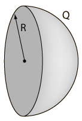
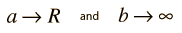

|  |
Isolated Sphere Capacitor?An isolated charged conducting sphere has capacitance. Applications for such a capacitor may not be immediately evident, but it does illustrate that a charged sphere has stored some energy as a result of being charged. Taking the concentric sphere capacitance expression:  |
| and taking the limits |  | gives |
Capacitor Concepts
| HyperPhysics***** Electricity and Magnetism | R Nave |